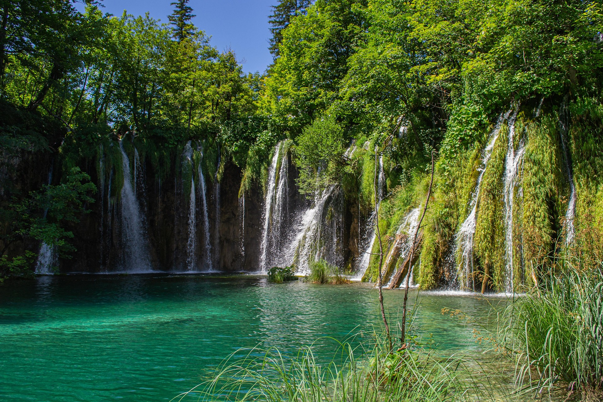
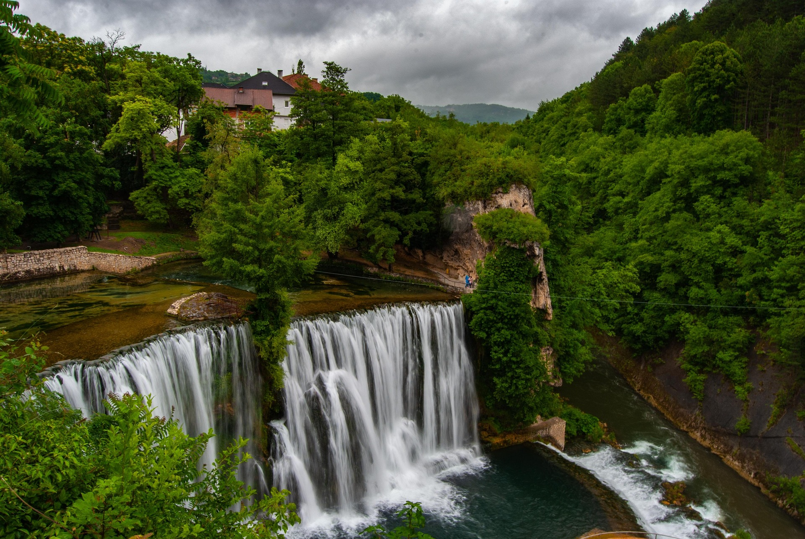
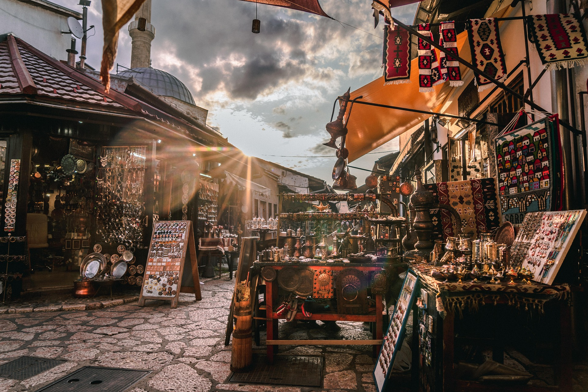
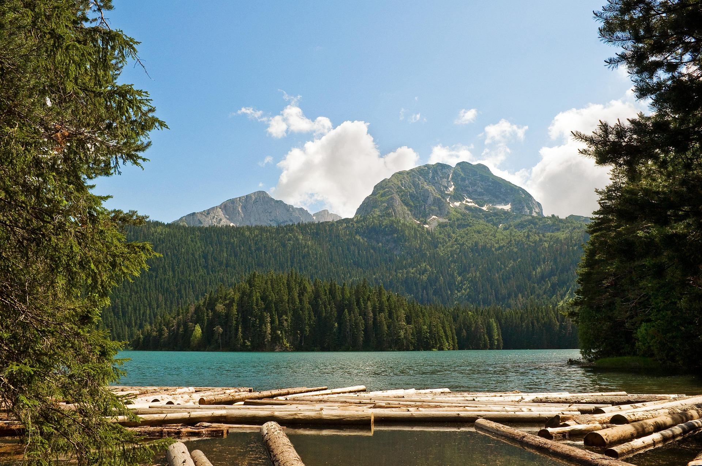
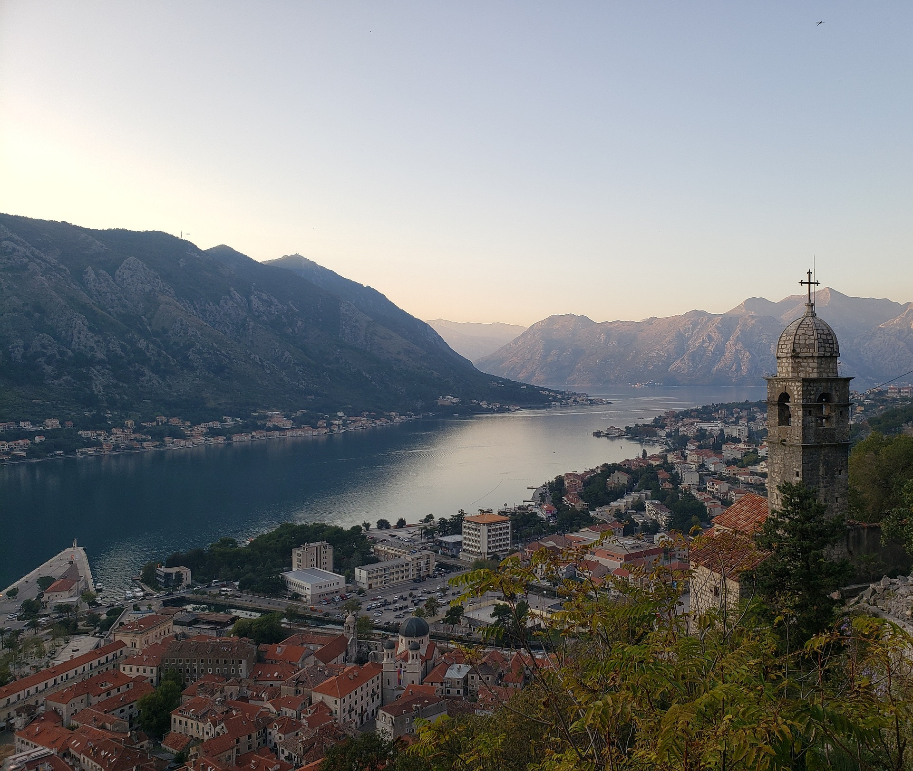
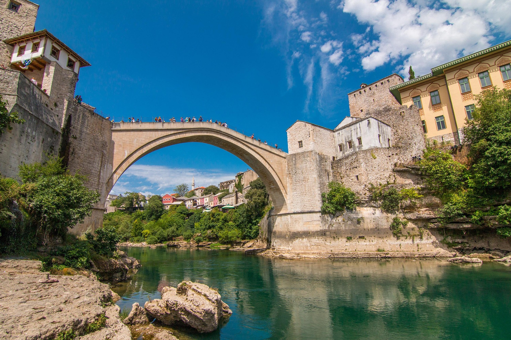
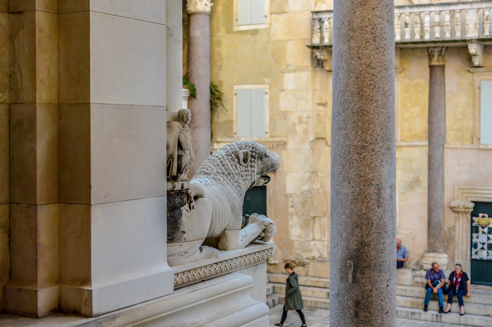
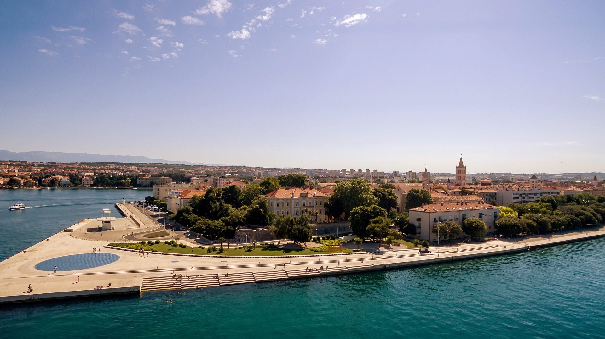

Balkan Roadbook 2026
Zemljevidi
Glavne etape, peš poti in izleti.
8 pripravljenih vodičev
Peš poti
Mestni ogledi, naravne poti in pohodi, pri katerih je pomembno smiselno zaporedje postankov. Vsaka kartica vodi do samostojnega vodiča s potekom poti, praktičnimi informacijami in povezavami na zemljevid.

Naravna pot
Plitviška jezera
Pripravljen ogled jezer z izbranim vhodom, smiselnim vrstnim redom poti, vožnjo z ladjico in panoramskim vlakom.

Mestni ogled
Jajce
Pot od Plivskega slapa skozi zgodovinsko središče do katakomb, obzidja in trdnjave nad mestom.

Mestni ogled
Sarajevo
Zgodovinski sprehod po Baščaršiji in starem mestu, skozi osmansko, avstro-ogrsko in sodobno Sarajevo.

Naravna pot
Črno jezero
Krožna pot okoli najbolj znanega ledeniškega jezera Durmitorja, skozi gozd in ob razgledih na gorski masiv.

Mestni ogled
Kotor
Sprehod po trgih, ulicah, cerkvah in obzidju starega Kotorja z možnostjo vzpona proti trdnjavi nad mestom.

Mestni ogled
Mostar
Sprehod skozi staro mestno jedro, Kujundžiluk in okolico Starega mostu z izbranimi razgledi na Neretvo.

Mestni ogled
Split
Zgodovinska pot skozi Dioklecijanovo palačo, Peristil, Vestibul, Rivo in Matejuško z možnostjo nadaljevanja proti Marjanu.

Mestni ogled
Zadar
Kratek, strnjen ogled starega mesta od Kopenskih vrat in rimskega foruma do Morskih orgel ter Pozdrava Soncu.
Preveri vreme, odpiralne čase in trenutno dostopnost poti. Za naravne poti naj bodo zemljevidi shranjeni tudi za uporabo brez povezave, na daljših ogledih pa imejta s seboj dovolj vode.